P39 新建用户 · 待审核
原Vue模板与逻辑，仅审核CSS；请求均拦截为测试样例，未创建真实账号。不含原生校验气泡、真实权限、整页或生产验收。
390×844 · 普通用户 · 默认四字段

390×844 · 邮箱 · 键盘焦点
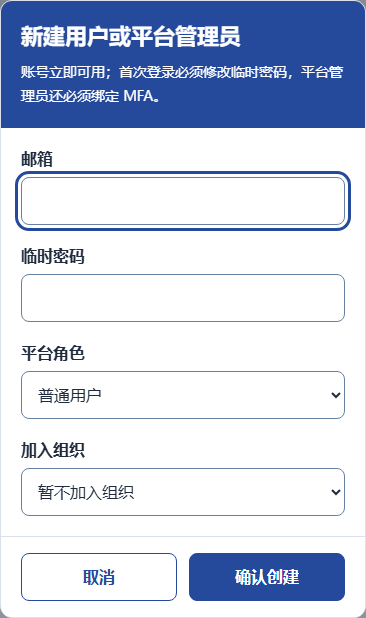
390×844 · 临时密码 · 键盘焦点
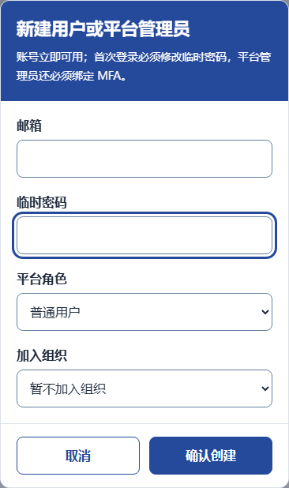
390×844 · 平台角色 · 运营管理员
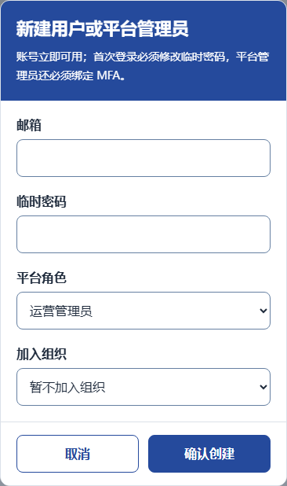
390×844 · 加入组织 · 普通成员
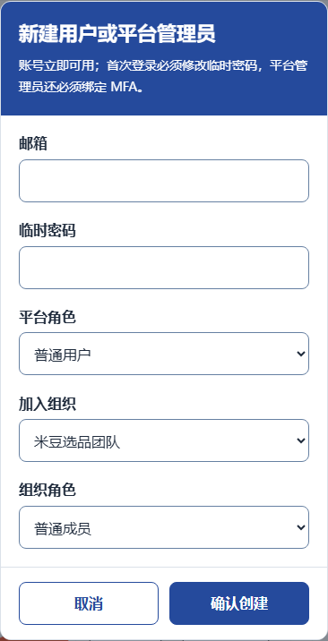
390×844 · 加入组织 · 组织管理员

390×844 · 原生必填无效态 · 不含系统气泡
390×844 · 原生邮箱格式无效态 · 不含系统气泡
390×844 · 原生密码不足12字符 · 不含系统气泡
390×844 · 确认创建 · 键盘焦点
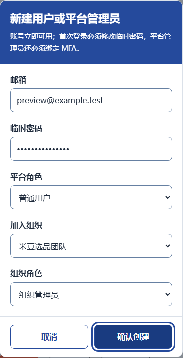
390×844 · 确认创建 · 悬停

390×844 · 提交等待 · 确认禁用，字段和取消仍可用
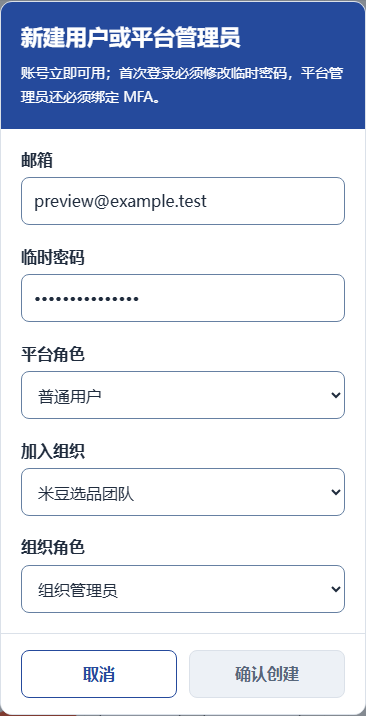
390×844 · 创建失败 · 保留字段
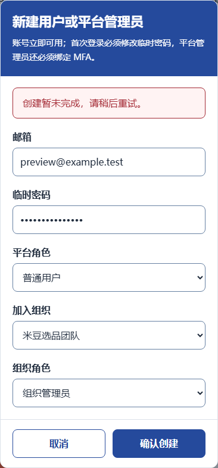
390×844 · 创建失败 · 重试操作

390×568 · 568px短屏 · 上部字段
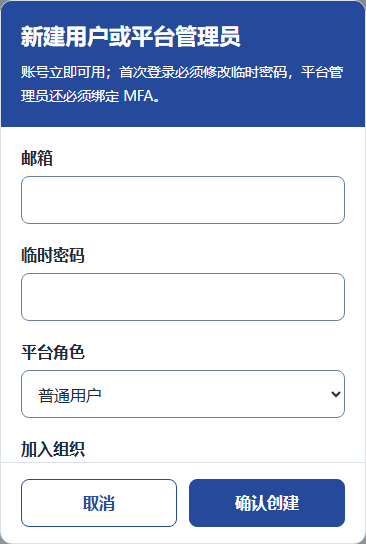
390×568 · 568px短屏 · 底部可达
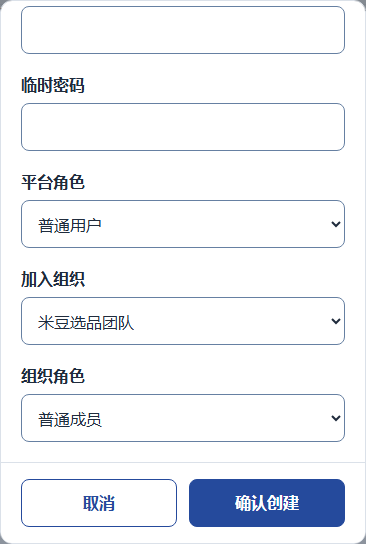
1440×844 · 普通用户 · 默认四字段

1440×844 · 邮箱 · 键盘焦点
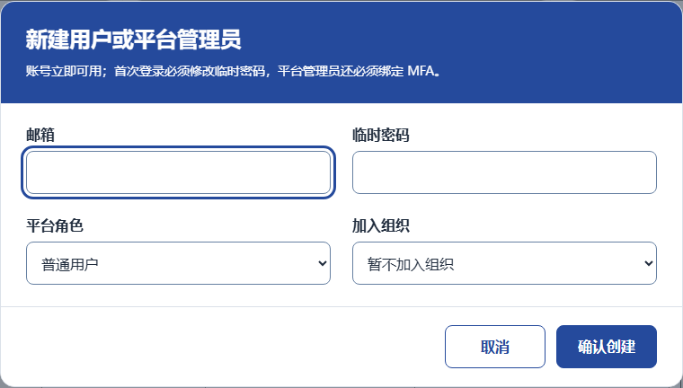
1440×844 · 临时密码 · 键盘焦点
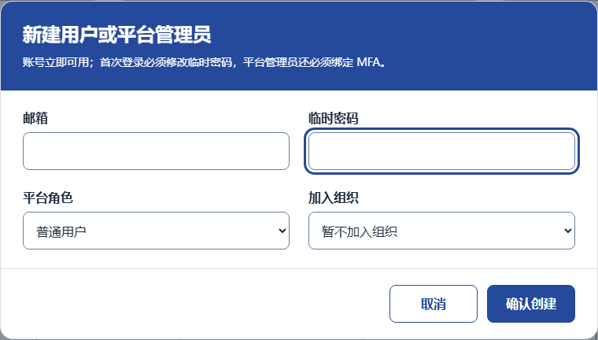
1440×844 · 平台角色 · 安全管理员
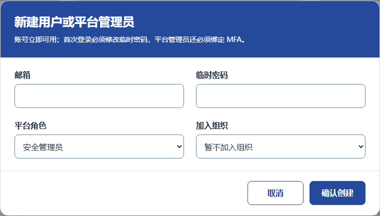
1440×844 · 加入组织 · 普通成员
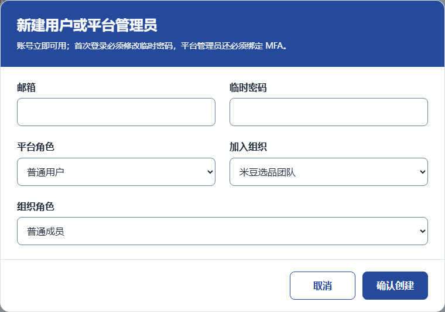
1440×844 · 加入组织 · 组织管理员

1440×844 · 原生必填无效态 · 不含系统气泡
1440×844 · 原生邮箱格式无效态 · 不含系统气泡
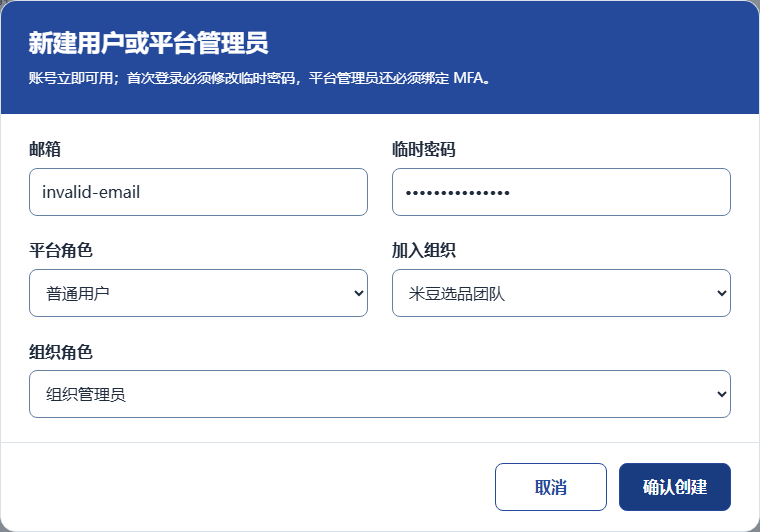
1440×844 · 原生密码不足12字符 · 不含系统气泡
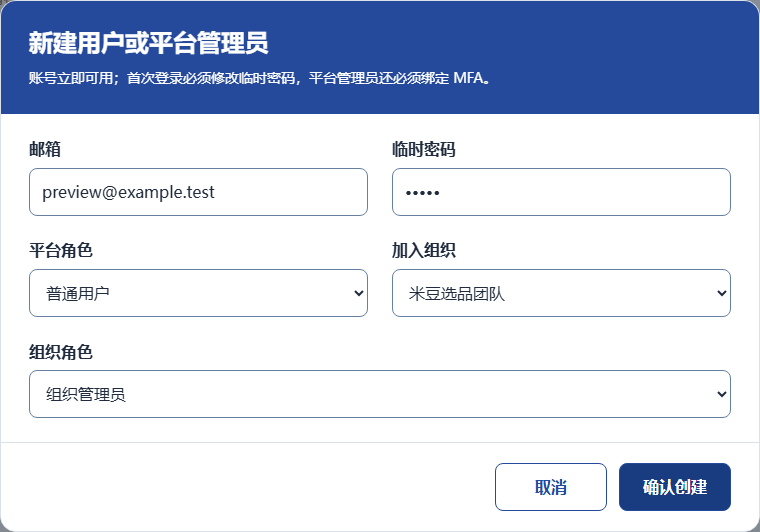
1440×844 · 取消 · 键盘焦点
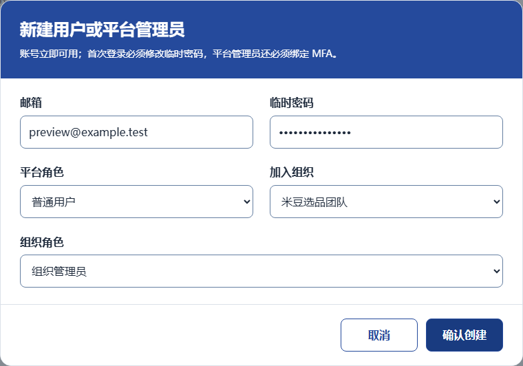
1440×844 · 确认创建 · 键盘焦点

1440×844 · 确认创建 · 悬停
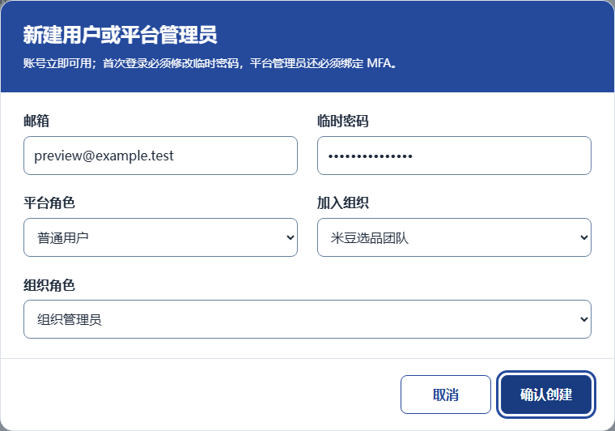
1440×844 · 提交等待 · 确认禁用，字段和取消仍可用
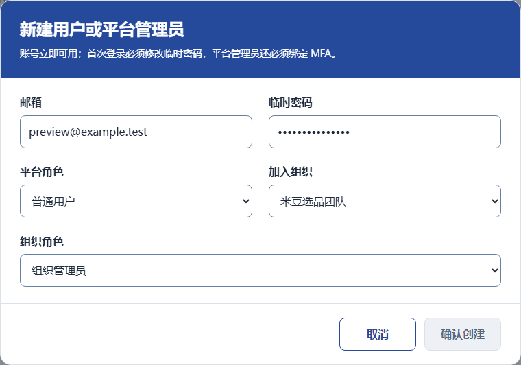
1440×844 · 创建失败 · 保留字段

1440×844 · 创建失败 · 重试操作
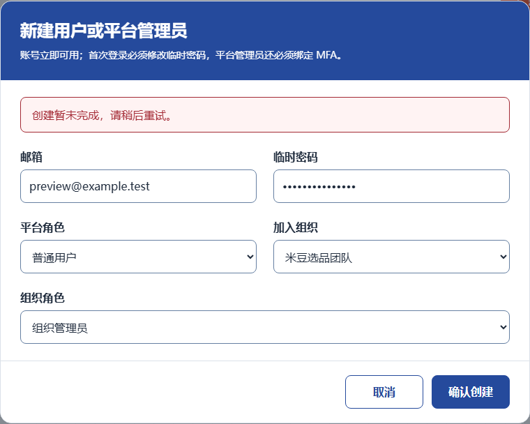
1440×844 · 重新打开 · 默认空表单
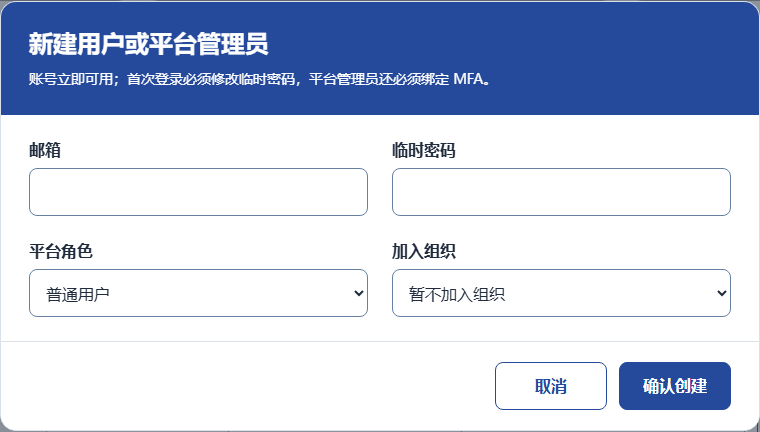